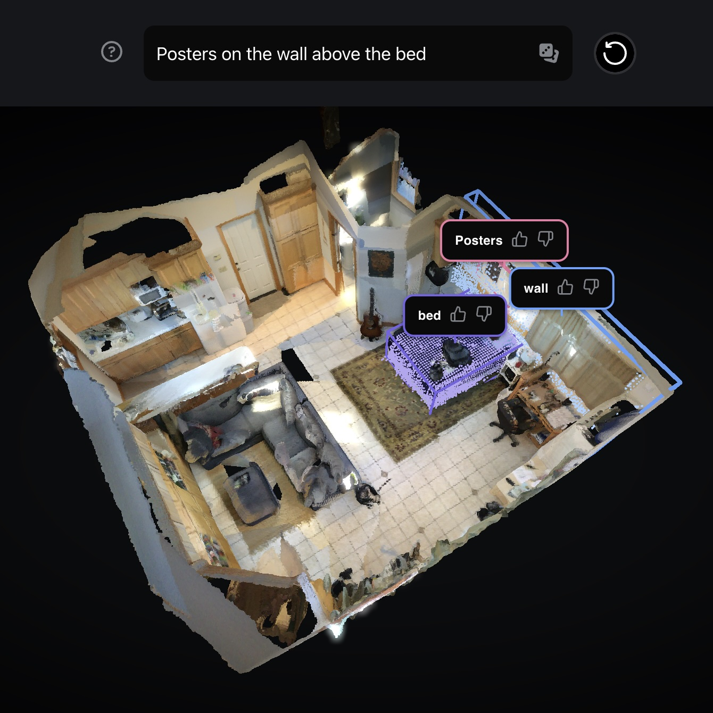

|
Alexander (Sasha) Sax I am a senior research scientist at Meta Superintelligence Labs working on the intersection of multimodal models and embodied AI.
I did my PhD at UC Berkeley, where I was advised by Jitendra Malik and Amir Zamir (EPFL). In the summer of 2022, I interned at FAIR with Georgia Gkioxari. I got my MS and BS from Stanford University, where I was advised by Silvio Savarese and graduated with an Erdős number of 3. |
{kind=link}
Research
My recent work focuses on creating new model capabilities for understanding, grounding, and reconstructing the physical world.
This work advances the full training and data generation loop, creating scalable techniques for pretraining and post-training multimodal models.
A few papers are highlighted. Equal contribution is indicated by * and listed in alphabetical order. |

|
SAM 3D: 3Dfy Anything in Images
Meta Superintelligence Labs arXiv, 2025 project page / demo / paper / github A foundation model for reconstructing objects' shape, pose, and texture from a single image. We cracked the 3D data bottleneck by having humans rank model generations. After pretraining on synthetic data, we use human feedback for sim-to-real transfer and preference alignment. |
|
|
Fast3R: Towards 3D Reconstruction of 1000+ Images in One Forward Pass
Jianing Yang, Alexander Sax, Kevin J. Liang, Mikael Henaff, Hao Tang, Ang Cao, Joyce Chai, Franziska Meier, Matt Feiszli CVPR, 2025 project page / demo / paper / github Replace the entire structure-from-motion pipeline with a single transformer. A purely learning-based approach for 3D reconstruction that scales with more data and compute. |
|
|
From Thousands to Billions: 3D Visual Language Grounding via Render-Supervised Distillation from 2D VLMs
Ang Cao, Sergio Arnaud, Oleksandr Maksymets, Jianing Yang, Ayush Jain, Sriram Yenamandra, Ada Martin, Vincent-Pierre Berges, Paul McVay, Ruslan Partsey, Aravind Rajeswaran, Franziska Meier, Justin Johnson, Jeong Joon Park, Alexander Sax ICML, 2025 project page / arXiv Use differentiable rendering to supervise 3D masks. We distill from 2D VLMs (think: SAM 3 or Gemini 3), then finetune on ~50k samples for 3D vision-language grounding. Achieves SOTA performance with strong empirical data scaling. |
|

|
Locate 3D: Real-World Object Localization via Self-Supervised Learning in 3D
The Cortex Team @ FAIR ICML, 2025 (Spotlight) website / demo / paper / github / model Use natural langauge to localize objects in 3D scenes. Combines a post-training data engine for 3D language grounding with 3D-JEPA pretraining. |
|
|
UniVLG: Unifying 2D and 3D Vision-Language Understanding
Ayush Jain*, Alexander Swerdlow*, Yuzhou Wang, Sergio Arnaud, Ada Martin, Alexander Sax, Franziska Meier, Katerina Fragkiadaki ICML, 2025 project page / arXiv / github A unified architecture for joint 2D and 3D vision-language understanding that achieves SotA performance in 3D language grounding benchmarks. |
|
|
OpenEQA: Embodied Question Answering in the Era of Foundation Models
The Cortex Team @ FAIR CVPR, 2024 project page / blog post / paper / github An open-vocabulary benchmark for Embodied Question Answering across 180+ real-world scenes. Humans far outperform VLMs on tasks that require complex spatial understanding. |
|
|
Omnidata: A Scalable Pipeline for Making Multi-Task Mid-Level Vision Datasets from 3D Scans
Ainaz Eftekhar*, Alexander Sax*, Roman Bachmann, Jitendra Malik, Amir Zamir ICCV, 2021 project page / arXiv / github A multimodal 2D/3D dataset of millions of frames from thousands of scanned and synthetic scenes. For surface normal estimation, ViTs trained on Omnidata achieve human-level performance on OASIS. SOTA depth and the annotation engine is released as OSS. |
|
|
Robustness via Cross-Domain Ensembles
Oğuzhan Fatih Kar*, Teresa Yeo*, Alexander Sax, Amir Zamir ICCV, 2021 (Oral Presentation) project page / arXiv / github Joint uncertainty estimation for perception tasks. Calibration is supervised with a lightweight post-training step. |
|
|
Robust Learning Through Cross-Task Consistency
Alexander Sax*, Amir Zamir*, Teresa Yeo, Oğuzhan Fatih Kar, Nikhil Cheerla, Rohan Suri, Zhangjie Cao, Jitendra Malik, Leonidas Guibas CVPR, 2020 (Best Paper Award Nominee) project page / arXiv / github Large-scale analysis of pretrained image-to-image networks. Compared to purely semantic perceptual losses like LPIPS, geometric perceptual consistency losses (depth/surface normal) yield sharper details and improve generalization to new domains. |
|
|
Side-Tuning: A Baseline for Network Adaptation via Additive Side Networks
Jeffrey O. Zhang, Alexander Sax, Amir Zamir, Leonidas Guibas, Jitendra Malik ECCV, 2020 (Spotlight) project page / arXiv / github Compared to full fine-tuning, and other parameter-efficient fine-tuning methods, simply adding a lightweight side network to control the activations is surprisingly competitive. We show results across vision, language, and robotics using both supervised learning and behavior cloning. |

|
Robust Policies via Mid-Level Visual Representations: An Experimental Study in Manipulation and Navigation
Bryan Chen*, Alexander Sax*, Francis E. Lewis, Silvio Savarese, Jitendra Malik, Amir Zamir, Lerrel Pinto CoRL, 2020 project page / arXiv / github Compared to domain randomization, pretrained image representations yield qualitatively better generalization to new environments, including sim-to-real transfer. In data regimes where visual domain randomization gets near-zero training performance, policies using pretrained image representations can saturate the benchmark. |
|
|
Learning to Navigate Using Mid-Level Visual Priors
Alexander Sax*, Jeffrey O. Zhang*, Bradley Emi, Amir Zamir, Leonidas Guibas, Silvio Savarese, Jitendra Malik CoRL, 2019 (Winner of CVPR19 Habitat Challenge RGB Track) project page / arXiv / github RL agents with pretrained image representations require 10x less data to achieve a given performance vs. starting from a random initialization. |
|
|
Taskonomy: Disentangling Task Transfer Learning
Amir Zamir, Alexander Sax*, William B. Shen*, Leonidas Guibas, Jitendra Malik, Silvio Savarese CVPR, 2018 (Best Paper Award) project page / arXiv / github A fully computational approach for modeling relationships across 26 fundamental vision tasks. Exploiting this structure with a pretraining/finetuning learning curriculum reduces overall supervision required by ~2/3. |
|
|
Gibson Env: Real-World Perception for Embodied Agents
Zhi-Yang He*, Fei Xia*, Amir Zamir*, Alexander Sax, Jitendra Malik, Silvio Savarese CVPR, 2018 (Spotlight, NVIDIA Pioneering Research Award) project page / arXiv / github A rendering and physics simulator to bridge the gap between large-scale simulation and real-world environments. The simulator features a database of thousands of real spaces and uses a generative model (GAN) for super-sampling. |
|
|
Joint 2D-3D-Semantic Data for Indoor Scene Understanding
Iro Armeni*, Alexander Sax*, Amir R. Zamir, Silvio Savarese arXiv, 2017 project page / arXiv / github A large-scale indoor dataset providing mutually registered 2D, 2.5D and 3D modalities with instance-level semantic annotations. Covers over 6,000m² across 6 large-scale indoor areas with 70,000+ RGB images and corresponding poses, depths, surface normals, semantic annotations, and pointmaps. |
Misc. |
|
Thanks Jon Barron for the clean website.
|